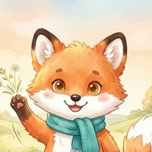
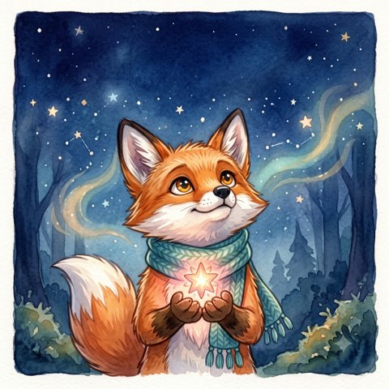

Focus AIOdatni «qildim» degan belgi emas, haqiqiy sarflangan vaqt bilan o'lchaydigan ilova — AI murabbiy va Luna kitoblari bilan.
Haydovchisiz — har 2 soatda 5 daqiqa yuring. Bugun 10 ming qadam!

Odat faqat real sarflangan vaqt bilan bajariladi. Ilova yopilsa ham, telefon uxlasa ham vaqt aniq.
Kalendar xarita, daraja, XP va 10 ta yutuq — hammasi haqiqiy sessiyalardan.
Kasbingiz va maqsadingizga mos maslahat. Sog'liqqa zararli rejani bermaydi.
Rasmli bolalar kitoblari va ertaklar ilova ichida — o'qish vaqti odatingizga yoziladi.
Fokus · O'qish · O'sish
Diqqatingiz — o'lchanadi
Android va brauzerda. Internetsiz ishlaydi, ma'lumot telefoningizda qoladi.
Odat «qildim» belgisi bilan emas, real sarflangan daqiqalar bilan bajariladi. Ilova yopilsa ham, telefon uxlasa ham — hisob aniq.
Kasbingiz va maqsadingizga mos maslahat. Sog'liqqa zararli rejani bermaydi.
Telefonni yuztuban qo'ying — ilova sezadi va bonus XP beradi.
Tun bo'yi ochiq qolgan taymer «9 soat ish» bo'lib yozilmaydi.
Bolalar uchun mehribon tulkicha: his-tuyg'ular va jasorat haqida ertaklar.
Eng ko'p so'raladigan savollarga javoblar.
Savol qoldimi? GitHub'da yozing
Yo'q. Ilova ham, sayt ham bepul, reklama yo'q.
Ha. Taymer, odatlar, statistika va kitoblar internetsiz ishlaydi. Internet faqat AI murabbiy bilan gaplashish uchun kerak.
Faqat telefoningizda (yoki brauzeringizda) — serverga yuborilmaydi. AI murabbiyga faqat siz yozgan xabar yuboriladi.
Yo'q. Vaqt real o'tgan vaqt bo'yicha hisoblanadi. Taymer 3 soatdan ortiq qarovsiz qolsa, ortig'i hisobga olinmaydi.
Ha. Luna haqidagi rasmli kitoblar 3–6 yoshli bolalar uchun yozilgan, o'qish vaqti odatga qo'shiladi.
Android telefonda (APK) va istalgan brauzerda. iOS versiyasi — keyingi bosqichda.